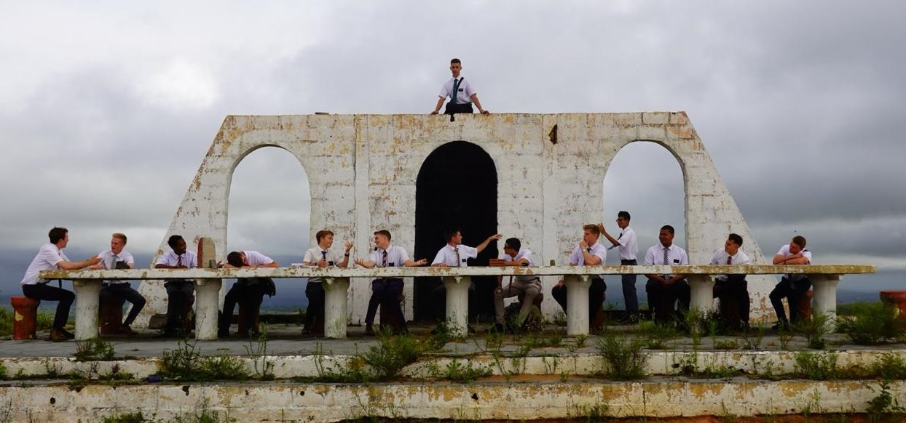

Arthur Albert Schmaiske Quoos | WDD 130
Whats'up! My name is Arthur, i'm 22 years old and recently started to live alone in curitiba, that picture shows, me as a district leader in Garanhuns PE, Brasil Recife-Sul mission (i'm in the middle)!
Whats'up! My name is Arthur, i'm 22 years old and recently started to live alone in curitiba, that picture shows, me as a district leader in Garanhuns PE, Brasil Recife-Sul mission (i'm in the middle)!